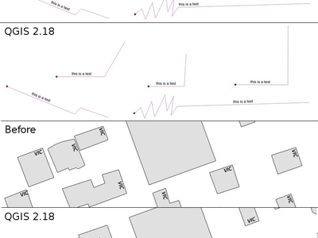
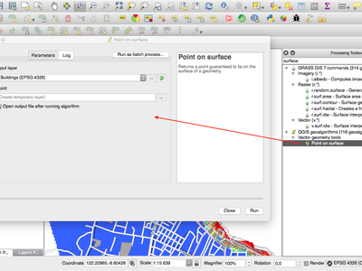
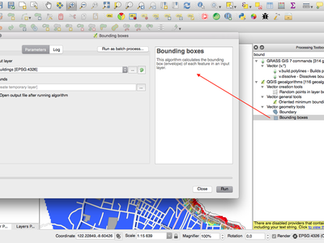

Elenco cambiamenti per QGIS 2.18¶

Questa è l’ultima versione della serie 2.x. L’attuale versione a lungo supporto (LTR) resta la 2.14.x. Questa versione fornisce ulteriori miglioramenti rispetto alla versione precedente. La maggior parte dell’attività è attualmente focalizzata sullo sviluppo di QGIS 3.0 che è la nostra versione di generazione successiva, pianificata per la fine del primo quarto del 2017.
Ringraziamenti
We would like to thank the developers, documenters, testers and all the many folks out there who volunteer their time and effort (or fund people to do so). From the QGIS community we hope you enjoy this release! If you wish to donate time, money or otherwise get involved in making QGIS more awesome, please wander along to qgis.org and lend a hand!
QGIS is supported by donors and sponsors. A current list of donors who have made financial contributions large and small to the project can be seen on our donors list. If you would like to become and official project sponsor, please visit our sponsorship page for details. Sponsoring QGIS helps us to fund our six monthly developer meetings, maintain project infrastructure and fund bug fixing efforts. A complete list of current sponsors is provided below - our very great thank you to all of our sponsors!
QGIS è un software libero e non c’è alcun obbligo di pagare nulla per utilizzarlo - vogliamo infatti incoraggiare le persone di ogni parte del mondo ad usarlo, indipendentemente dalla propria situazione finanziaria o sociale - crediamo che mettere tutti nella condizione di utilizzare gli strumenti decisionali spaziali produrrà una società migliore per tutta l’umanità.
Sponsor per QGIS versione 2.18.0¶
Annualmente riceviamo supporto da diverse organizzazioni che apprezzano il nostro lavoro e che vogliono agevolare il lavoro di sviluppo che coinvolge l’intero progetto. Tutti gli sponsor sono elencati qui sotto.
  QGIS Usergroup Switzerland, Switzerland
QGIS Usergroup Switzerland, Switzerland |
  State of Vorarlberg, Austria
State of Vorarlberg, Austria |
 Office of Public Works, Ireland, Irlanda Office of Public Works, Ireland, Irlanda |
 GAIA mbh, Germania GAIA mbh, Germania |
 Sourcepole AG, Svizzera Sourcepole AG, Svizzera |
 QGIS user group Germany, Germania QGIS user group Germany, Germania |
|
|
|
|
|
|
|
|
|
|
|
|
|
|
|
|
|
SOLTIG (Soluciones en Tecnologías de Información Geográfica) |
|
|
|
|
|
|
|
|
|
|
|
|


Generale¶
Novità: Link automatici nello strumento di identificazione¶
Qualunque collegamento http o mailto all’interno degli attributi sarà automaticamente convertito in link cliccabili all’interno del pannello dei risultati dello strumento di identificazione.

Questa funzionalità è stata sviluppata da Sandro Mani (Sourcepole)
Feature: Mouse wheel over color dialog sliders¶
In QGIS 2.18 you can now scroll the mouse wheel over any of the sliders within the color picker dialog to increment the value by small amounts. This is a handy shortcut for small tweaks to color components.

Questa funzionalità è stata finanziata da Nyall Dawson (North Road)
Questa funzionalità è stata sviluppata da Nyall Dawson (North Road)
Feature: Add custom color schemes to color button drop down menu¶
QGIS 2.18 adds the ability for users to set whether a user created color scheme should show up in the color button drop-down menus. This setting is controlled through the color picker dialog, on the lists tab. Just add a new color scheme, then from the scheme menu tick the new «show in buttons» option. It’s a handy shortcut if you have sets of common palettes and want them to be instantly available through the color menu.

Questa funzionalità è stata finanziata da North Road
Questa funzionalità è stata sviluppata da Nyall Dawson (North Road)
Simbologia¶
Novità: Il selettore del colore è ora integrato nel pannello di stile del layer¶
In QGIS 2.18, cliccare sul pulsante del colore all’interno del pannello di stile del layer genera l’apertura della finestra di dialogo del selettore del colore all’interno del pannello di stile stesso invece che in una finestra di dialogo separata. Ciò consente una modifica interattiva dei colori con anteprima immediata del risultato.

Questa funzionalità è stata finanziata da North Road
Questa funzionalità è stata sviluppata da Nyall Dawson (North Road)
Etichettatura¶
Novità: Supporto alla lista di sostituzione per l’etichettatura¶
Aggiunge la possibilità di specificare una lista di elementi di testo sostitutivi per definire quali applicare al testo dell’etichetta. Ad es. per abbreviare tipi di strade.
Gli utenti possono esportare e importare liste di elementi sostitutivi da riutilizzare e condividere più facilmente.

Questa funzionalità è stata finanziata da North Road
Questa funzionalità è stata sviluppata da Nyall Dawson (North Road)
Novità: miglioramento dell’algoritmo di posizionamento dell’etichetta per le linee¶
La modalità di etichettatura parallela per i vettori di linee è stata notevolmente migliorata con un nuovo algoritmo che evita di posizionare etichette sulle parti irregolari delle geometrie dell’elemento.

Questa funzionalità è stata finanziata da Andreas Neumann
Questa funzionalità è stata sviluppata da Nyall Dawson (North Road)
Novità: Etichetta i poligoni utilizzando etichette curvate lungo il perimetro¶
Questa funzionalità aggiunge una nuova modalità per etichettare i poligoni nei casi in cui il perimetro del poligono è etichettato utilizzando l’etichettatura curvata.

Questa funzionalità è stata finanziata da North Road
Questa funzionalità è stata sviluppata da Nyall Dawson (North Road)
Visualizzazione¶
Novità: Anteprima delle mattonelle raster (raster WMTS and XYZ)¶
Nelle versioni precedenti di QGIS, gli utenti dovevano attendere lo scaricamento di tutte le mattonelle di un raster per poter visualizzare la mappa risultante. Tale comportamento è stato corretto e le mattonelle sono mostrate nella mappa non appena sono scaricate, con conseguente miglioramento dell’esperienza utente e riducendo il tempo richiesto prima che qualcosa sia mostrato. Inoltre, le mattonelle precedentemente scaricate con risoluzioni da più basse a più alte possono essere usate per la funzionalità di anteprima nella aree in cui le mattonelle con la corretta risoluzione non sono ancora state scaricate.

Questa funzionalità è stata finanziata da Land Information New Zealand
Questa funzionalità è stata sviluppata da Martin Dobias (Lutra Consulting)
Novità: Visualizzazione dei raster cancellabile (raster WMS, WMTS, WCS e XYZ)¶
Questa funzionalità aumenta l’esperienza utente quando si lavora con raster che provengono da server remoti. In passato era necessario attendere fino al completamento dei download per avere la possibilità di ingrandire o spostare la mappa nuovamente, poiché l’interfaccia utente rimaneva congelata nel mentre. Ciò è stato corretto dal fatto che la visualizzazione dei raster può essere cancellata in qualunque momento.
Questa funzionalità è stata finanziata da Land Information New Zealand
Questa funzionalità è stata sviluppata da Martin Dobias (Lutra Consulting)
Gestione Dati¶
Novità: Aggiungi flag per copiare solo le geometrie selezionate¶
Il Plugin Offline Editing è un plugin predefinito offerto da QGIS e ti consente di rendere offline un insieme di dati remoti (ad es. da un database), modificarne i campi, e in seguito sincronizzarlo di nuovo quando torni a lavoro. Ciò estende le possibilità di modifica offline per lavorare soltanto con un sottoinsieme di layer di grosse dimensioni.

Questa funzionalità è stata finanziata da DB Fahrwegdienste GmbH
Questa funzionalità è stata sviluppata da Matthias Kuhn (OPENGIS.ch)
Moduli e Widget¶
Novità: Consenti il controllo delle etichette per widget per singoli widget per la modifica¶
Allow controlling labels for individual edit widgets in a form. In the drag and drop designer, a double click on an item will allow controlling if the label should be shown for each item individually.
In addition it is possible to configure if the link/unlink buttons are shown in relation reference widget, which is useful to hide in 1:n relations where a child can’t exist without its parents.

Questa funzionalità è stata finanziata da Kanton Zug, GIS-Fachstelle
Questa funzionalità è stata sviluppata da Matthias Kuhn (OPENGIS.ch)
Novità: Visibilità condizionale per schede e caselle di gruppo¶
This adds a new configuration option to conditionally show or hide tabs and groupboxes in drag and drop designer forms.
Configuration is done via a double click in the designer tree in the fields configuration interface.
An expression can be entered to control the visibility. The expression will be re-evaluated everytime values in the form change and the tab or groupbox shown/hidden accordingly.

Questa funzionalità è stata sviluppata da Matthias Kuhn (OPENGIS.ch)
Feature: Client side default field values¶
Allows an expression to be set for a vector layer field which is used to evaluate a default value for this field. Default value expressions can utilise properties of the feature which exist at the time of calling, such as digitized geometries. Expression variables can also be used in default value expressions, making it easy to eg insert a user’s name, the current datetime, project path, etc.

Questa funzionalità è stata finanziata da DB Fahrwegdienste GmbH
Questa funzionalità è stata sviluppata da Nyall Dawson (North Road)
Map Composer¶
Feature: True North Arrows¶
QGIS 2.18 adds support for orienting north arrows in the composer to True North. Previously all arrows were aligned to grid north, which is unsuitable for polar regions or non-north up projections (such as some South African projection systems). Now, you can choose to orient arrows to either grid north or true north. There’s also an optional offset angle, which can be used to specify a grid convergence to make your arrows orient to magnetic north!

This feature was funded by Norwegian Polar Institute’s Quantarctica project
Questa funzionalità è stata sviluppata da Nyall Dawson (North Road)
Processing¶
Feature: Point on surface algorithm¶
This new algorithm is similar to the centroids algorithm, but where a centroid may fall outside its corresponding feature the “Point on surface” algorithm is guaranteed to create a point which is inside the corresponding polygon feature (or touching the corresponding line feature for line layers).

Questa funzionalità è stata finanziata da North Road
Questa funzionalità è stata sviluppata da Nyall Dawson (North Road)
Feature: Processing dissolve algorithm accepts multiple fields¶
The dissolve algorithm now allows you to dissolve based on more than one field value. In previous QGIS versions a dissolve could only group features by a single field value.

Questa funzionalità è stata finanziata da North Road
Questa funzionalità è stata sviluppata da Nyall Dawson (North Road)
Feature: Optimised processing clip algorithm¶
The processing clip algorithm has been optimised for common use scenarios, resulting in dramatic speedups for clipping operations. For example:
Clipping a roads layer with 1 million lines against 2 polygons
Clipping a 5 million point address layer against 2 polygons

Questa funzionalità è stata finanziata da North Road
Questa funzionalità è stata sviluppata da Nyall Dawson (North Road)
Feature: Bounding boxes algorithm¶
This new algorithm calculates the bounding box (envelope) of each feature in the input layer.

Questa funzionalità è stata finanziata da North Road
Questa funzionalità è stata sviluppata da Nyall Dawson (North Road)
Feature: Merge connected lines algorithm¶
This algorithm joins all the connected parts of MultiLineString geometries into single LineString geometries. If any parts of the input MultiLineString geometries are not connected, the resultant geometry will be a MultiLineString containing any lines which could be merged and any non-connected line parts.

Questa funzionalità è stata finanziata da North Road
Questa funzionalità è stata sviluppata da Nyall Dawson (North Road)
Feature: Geometry boundary algorithm¶
This new algorithm returns the closure of the combinatorial boundary of the input geometries (ie the topological boundary of the geometry). For instance, a polygon geometry will have a boundary consisting of the linestrings for each ring in the polygon, and a line geometry will have a boundary consisting of the start and end points of the line. This algorithm is only valid for polygon or line layers.

Questa funzionalità è stata finanziata da North Road
Questa funzionalità è stata sviluppata da Nyall Dawson (North Road)
Data Providers¶
Feature: Native support of XYZ tile layers¶
Raster tiles in XYZ format are now natively supported within WMS data providers, allowing users to display basemaps from other sources without requiring third-party plugins like QuickMapServices or OpenLayers anymore.
To add connections to XYZ layers, just open browser dock widget, look for item called «Tile Server (XYZ)» and right click it to get a popup menu with «New connection» action. You will be asked for URL, in which {x}, {y}, {z} will be replaced by the actual tile numbers according to the current map view. For example, to add OpenStreetMap base map, one may use this URL:
http://c.tile.openstreetmap.org/{z}/{x}/{y}.png
The data provider also supports encoding of XYZ tile numbers into «quadkeys» used by Bing. Simply use {q} instead of {x}, {y} and {z} in the URL.

This feature was funded by Lutra Consulting
Questa funzionalità è stata sviluppata da Martin Dobias (Lutra Consulting)
QGIS Server¶
Feature: Possibility to segmentize feature info geometry in server¶
Necessary for geometries that contain curves (CircularArc, CompoundCurve, CurvePolygon), but the web client (e.g. QGIS Web Client) can’t handle the display of these geometry types.
This feature can be enabled in the «OWS server» tab in the «Project Properties» dialogue.

Questa funzionalità è stata finanziata da Andreas Neumann
This feature was developed by Marco Hugentobler (Sourcepole)
Plugins¶
Feature: DB Manager: Add the ability to update SQL Layer¶
With this feature the user can update the layer datasource if it’s based on an SQL request.
This feature was funded by Ifremer
This feature was developed by 3Liz
Programmability¶
Feature: Expose GEOS linear referencing function to QgsGeometry¶
A new function QgsGeometry::lineLocatePoint() has been added for retrieving the distance along a linestring to the nearest position on the linestring to a given point.
Questa funzionalità è stata finanziata da North Road
Questa funzionalità è stata sviluppata da Nyall Dawson (North Road)
Feature: New PyQGIS classes in 2.18¶
New core classes¶
- QgsAnnotation - an interface for annotation items which are drawn over a map
- QgsFeedback - a base class for feedback objects to be used for cancellation of something running in a worker thread
- QgsOptionalExpression - an expression with an additional enabled flag
New GUI classes, Reusable widgets¶
- QgsExpressionLineEdit - includes a line edit for entering expressions together with a button to open the expression creation dialog. This widget is designed for use in contexts where no layer fields are available for use in an expression and space is constrained.
- QgsTabWidget - similar to QTabWidget but with additional methods to temporarily hide/show tabs
Feature: New expression functions¶
QGIS 2.18 adds several new expression functions, including functions for angle/distance interpolation.
line_merge: merges a MultiLineString geometry into connected LineStringsboundary: returns a geometry’s topological boundary, ie for polygons this is a MultiLineString representing the polygon’s ringsangle_at_vertex: returns the average (bisector) angle to a geometry at a specified vertex indexdistance_to_vertex: returns distance along geometry to a specified vertex indexline_interpolate_angle: calculates the angle parallel to a geometry at the specified distance along the geometryline_interpolate_point: returns a point on line at distanceline_locate_point: returns distance along line to nearest line location closest to specified point
Questa funzionalità è stata finanziata da Andreas Neumann
Questa funzionalità è stata sviluppata da Nyall Dawson (North Road)